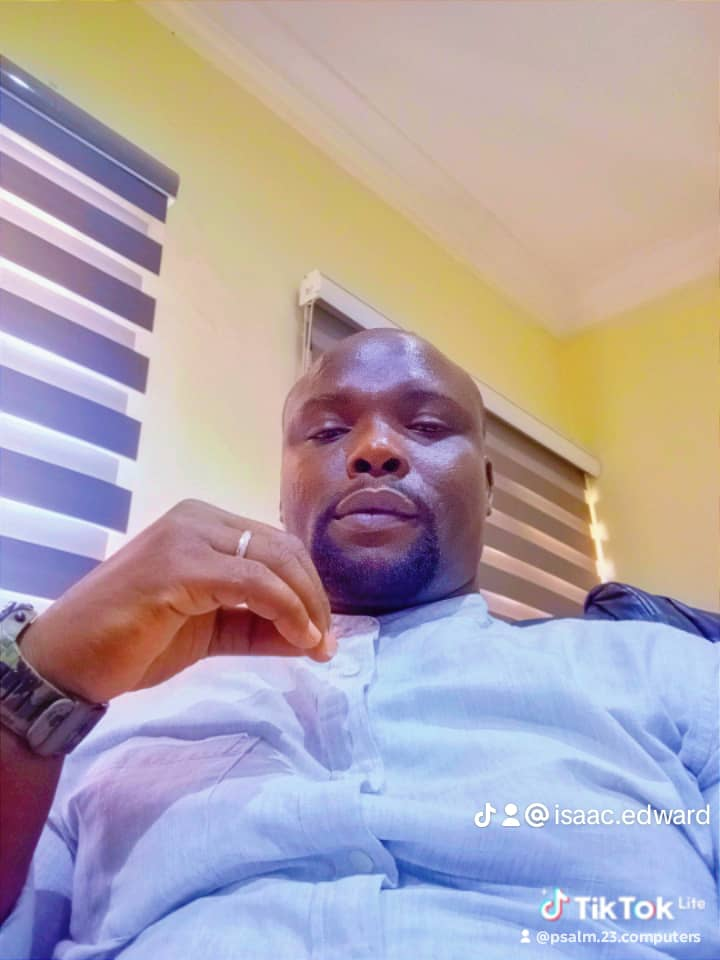

OGBO ISAAC
CONTACT: 2, Onikoyi Savage Street
off Daddy
Savage
Fagba, Lagos State, Nigeria
Phone Numbers:+2347058997752
+2347016417789
email:isaacedwardogbo@yahoo.com
Education And Certification
PROFESSIONAL SUMMARY
To work and contribute in a dynamic and reputable organization that prioritizes excellence, achieved through hard work, integrity, and result-oriented service delivery. I aim to apply strong customer service principles within the field of Information Technology to enhance the user experience for clients, employees, and the organization’s administration. I am also committed to continuously learning, improving, and developing new IT skills and techniques that contribute to the organization’s growth and innovation. Furthermore, I seek opportunities to collaborate with like-minded IT professionals in the creation, development, and deployment of modern and future-focused IT applications.
WORK EXPERIENCE
- Software Support Team. 04/2019 To 06/2021
Completesoft Global Solutions Limited- Block p, Plot3, Ogba Housing Scheme, OpenArcade, Beside GT Bank, Aguda, Ogba, Lagos State, Nigeria
- Web enabled Applications Implementations, test running and client support
- Collection of Customers Requests and Complains and proffering
appropriate solutions.
- Application upgrade and technical supports for both newand existingclient
- Computer hardware and office gadgets repairs and maintenance
- Mobilization and Marketing Strategist.
- Installation and Configurations of Microsoft SQl and IIS (Internet
Information Services).
- SQL Operation and manipulation for desired Results and Efficient outputs .
- Supported Chief Operating Officer with daily operational functions
- Manager, 01/2011 to 2017
Psalm 23 Computers-46, Missions Road, Benin City, Edo State, Nigeria
- System Maintenance and repairs
- Sales and Supply of Computers and Accessories.
- Training of students on computer hardware repairs, maintenance, software installations and upgrades
- Senior Engineer, 01/2011
Enoma Plus Technology - Abibu Oki Street, Marina, 08067775173, LagosState,Nigeria
- Collecting data of customers and registrations of their respective system faults
- Repairs of laptops and installations of Solar and security systems
- Bank Transactions: confirmation of daily sales and lodgment into the bank
- Training of students in laptop repairs, servicing, installations and upgrades
- Other engineering or office duties when called upon.
Skills And Hobbies
LANGUAGE
- English
- Edo language
- Original Warri pigin
REFERENCES
Available upon request